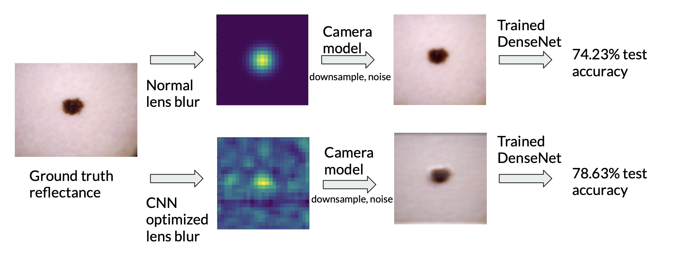

| Paper PDF |

|
Skin lesions are extremely important to diagnose, as they can be deadly and can affect other body parts. Indeed, melanomas, malignant lesions, have the highest mortality rates out of all types of cancers. Therefore, improving diagnosis accuracy of skin lesions is an important problem that can save lives. In this project we tried to create an optimized camera lens that can improve the ability of a neural network to categorize images of skin lesions. We did this by creating a mathematical model of a camera and used a large dataset (HAM10000) of 10,015 labeled images of skin lesions to train a neural network along with the model parameters of the camera. The two physical parameters we trained were the illumination pattern on the lesion and the point spread function of the optical lens. We found that the illumination pattern did not increase the accuracy of the network, but the optimized PSF increased the accuracy of the neural network by 4%.
|
|
|
| Paper: |
Code and Data:
|